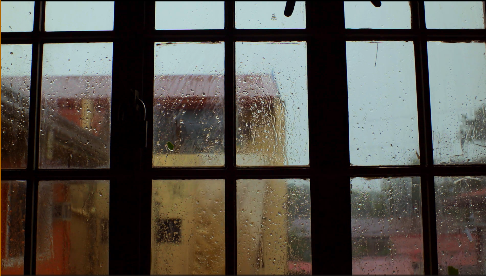
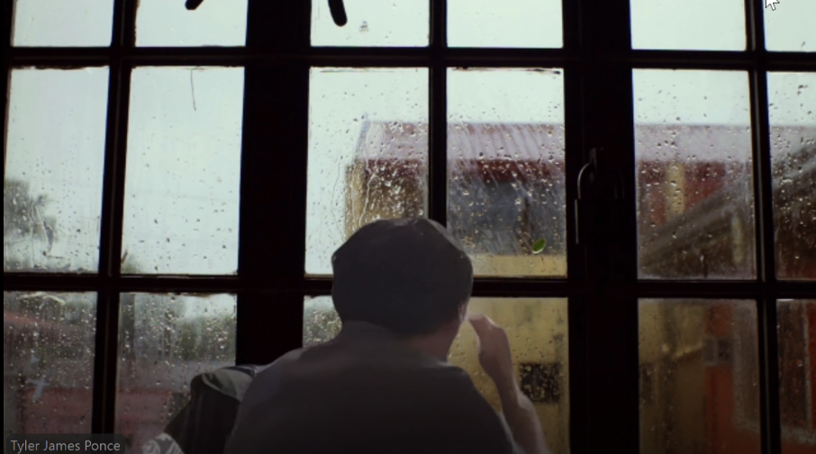
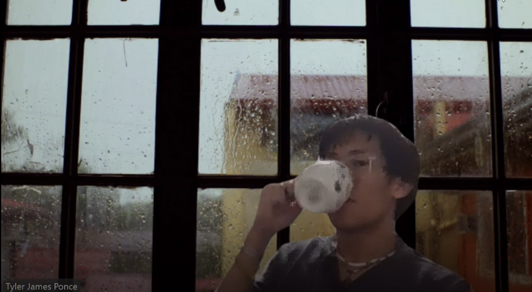

Project Overview
For this project, I created a custom Zoom virtual background video that alters the perception of my space. Instead of showing my actual room, the background shows a rainy window view, creating a quiet, contemplative atmosphere. The video captures me looking out the window, sipping coffee, talking on the phone, and yawning — everyday moments that feel calm and reflective.
Final Video

The final background video shows a rainy window scene. This simple, atmospheric background transforms the Zoom space into a cozy indoor setting.
Screen Captures


These screen captures show the virtual background in action during a Zoom session, demonstrating how the video loops and integrates with the meeting interface.
Process
I took video footage from a website called pexels and used that as my background for my amazing act. Because the video was so long, I did not have to edit and loop it, instead it was long enough so there weren't any seems in the video.
Concept
This project explores how green screen technology and virtual backgrounds can shift our sense of place during video calls. By replacing my actual environment with a rainy window scene, I created a calmer, more introspective mood. The project reflects on the difference between the physical space the actor (me) occupies and the visual space the audience (Zoom participants) experiences.